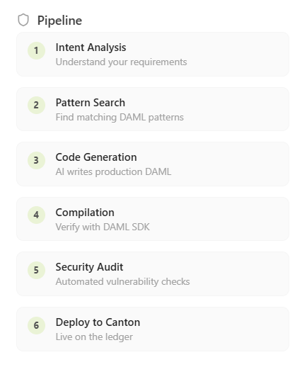
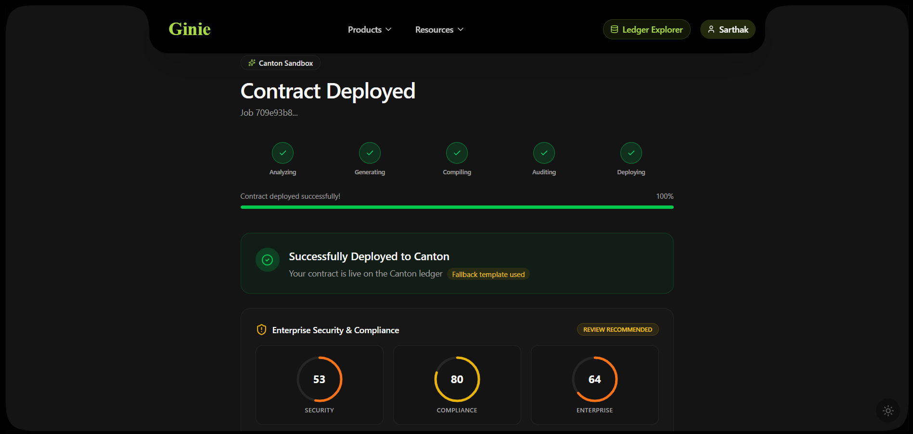

The 7-Stage Pipeline
Every generation runs through all 7 stages in sequence. The pipeline is built on LangChain + LangGraph with Claude Sonnet as the primary LLM.

Stage-by-stage breakdown
| Stage | Name | Description |
|---|---|---|
| 01 | Intent Agent | Parses plain English prompt into structured JSON contract specification (parties, fields, choices, constraints) |
| 02 | RAG Layer | Retrieves relevant Daml patterns from the institutional pattern library (ChromaDB vector store) |
| 03 | Writer Agent | Generates complete, idiomatic Daml module based on intent spec and retrieved patterns |
| 04 | Compile Agent | Runs the real dpm build command against the generated Daml source |
| 05 | Fix Agent | Handles compilation errors — recognises 11 error types, retries up to 3× |
| 06 | Audit Layer | Runs 5-gate pre-deployment security scan on every generated contract |
| 07 | Deploy Agent | Uploads compiled DAR to Canton Ledger API, returns Contract ID and CantonScan link |
Fix Agent — error types handled
| Error type | Example | Fix approach |
|---|---|---|
| Missing signatory | Template has no signatories | Adds signatory from first party in spec |
| Type mismatch | Expected Party, got Text | Corrects type annotation |
| Unbound variable | Variable 'amount' not in scope | Adds field to template record |
| Missing import | Unknown module DA.Date | Adds missing import statement |
| Choice return type | Expected ContractId, got () | Wraps return in correct type |
| Duplicate field | Field 'amount' defined twice | Removes duplicate, merges definitions |
| Missing module header | Expected module declaration | Adds correct module Main where |
| Invalid party expression | Party literal not allowed | Converts to parameterised party field |
| Non-consumable archive | archive on non-consumable choice | Adjusts choice kind and return type |
| Missing do block | Expected 'do' keyword | Wraps body in do notation |
| SDK version mismatch | daml-sdk-version mismatch | Updates daml.yaml to SDK 3.4 |
RAG & Pattern Library
The RAG (Retrieval-Augmented Generation) layer is what makes Ginie's Daml output idiomatic. Instead of generating from scratch, the Writer Agent retrieves the closest matching patterns from a curated library of validated institutional Daml contracts.
What's in the pattern library
- digital-asset/daml — official Daml examples and stdlib patterns
- digital-asset/daml-finance — financial instrument templates (bond, repo, DvP, cash)
- digital-asset/splice — Splice protocol patterns and Canton utilities
- digital-asset/cn-quickstart — Canton application scaffolding patterns
- digital-asset/ex-models — extended Daml model examples
- Community-contributed patterns via Canton Skills (MIT, Apache 2.0 licensed)
Canton Skills
Canton Skills is a separately published npm package (npx canton-skills install) that provides a structured knowledge base for AI coding agents. It covers Canton SDK 3.4, Splice 0.5.0, DPM, CIP-0103, CIP-0056, PQS, TypeScript frontend patterns, and deprecated API guardrails. In Ginie, Canton Skills functions as the primary knowledge layer for both the Writer Agent and Fix Agent.
npx canton-skills install to give your AI assistant the same Canton knowledge base Ginie uses internally.
Audit Layer
Every Ginie-generated contract passes a 5-gate pre-deployment security scan before any DAR is uploaded to the Canton ledger. A CRITICAL finding blocks deployment entirely and is returned with a specific, line-level explanation.
ensure clauses that could be exercised in invalid contract states. These generate warnings, not blocks — the contract deploys but the finding is returned.@daml.upgrade annotation, valid version string. Every export includes UPGRADE_NOTES.md.Reading the security scores
After successful deployment, Ginie returns three Enterprise Security & Compliance scores — Security, Compliance, and Enterprise readiness — generated from the audit findings and shown on the deployed contract page.

| Score | What it measures | Block threshold |
|---|---|---|
| Security | Gate 1 + 2 findings weighted by severity | CRITICAL finding = blocked |
| Compliance | Gate 3 + 4 warnings and anti-pattern density | High warning count = Review Recommended |
| Enterprise | SCU compatibility + documentation quality | Upgrade-incompatible = blocked |
SCU Compatibility
Smart Contract Upgrade (SCU) is Canton's on-chain contract upgrade mechanism. Every Ginie-generated contract is SCU-compatible from the first deployment — it can be upgraded on-chain without downtime or manual migration of active contracts.
What Ginie enforces by default
- All new fields added to templates are
Optional— new fields cannot break existing contracts - No field removals or renames — additive-only evolution enforced by Gate 5
@daml.upgradeannotation structure applied to upgrading modulesdaml.yamlversion string uses proper semver format — not hardcoded0.0.1- Every export bundle includes
UPGRADE_NOTES.mddocumenting the upgrade path
The SCU Upgrade Agent (M2)
When you need to modify an already-deployed contract, the SCU Upgrade Agent handles the full upgrade lifecycle — generating the new version with upgradeFrom annotation, validating additive-only changes, and bumping the daml.yaml version.
# M2+ — Upgrade an existing deployed contract result = client.upgrade( source_file="./Bond.daml", current_version="0.0.1", modification="add an optional maturityExtension field of type Optional Date" ) # result.new_source — upgraded .daml with upgradeFrom annotation # result.daml_yaml — bumped to version 0.0.2 # result.upgrade_notes — UPGRADE_NOTES.md for active contract migration
UPGRADE_NOTES.md generated in every export explains any manual migration steps required for active contract instances.